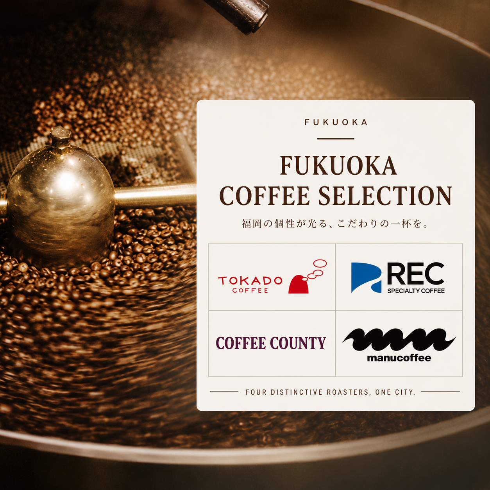

豆香洞｜職人焙煎與澄澈杯感
逐批觀察生豆狀態，追求高香氣、乾淨且沒有雜味的滋味。差異在於以焙煎職人的判斷，替每位飲用者找出屬於自己的好喝。
四種職人氣質，
一座城市的咖啡風景。

福岡的咖啡風景不只一種答案。豆香洞以職人焙煎追求香氣與澄澈杯感；COFFEE COUNTY 從產地旅行出發，忠實呈現果實與明亮酸質；REC COFFEE 以競技級技術和服務，讓精品咖啡更容易親近；manucoffee 則以甜感、質地與玩心，連結城市、藝術與環境循環。
fréa 欣賞四家店各自清楚、不互相取代的個性。從精準焙煎、產地風味、專業萃取到城市文化，每一杯都能帶人認識福岡不同的一面。
逐批觀察生豆狀態，追求高香氣、乾淨且沒有雜味的滋味。差異在於以焙煎職人的判斷，替每位飲用者找出屬於自己的好喝。
重視農園、品種與處理法，忠實呈現咖啡果實的酸質與香氣。四家之中最鮮明地強調產地個性與果實感。
從咖啡車起步，以競技經驗、精準萃取與款待傳遞產地故事。特色是專業度高，同時讓精品咖啡容易理解與親近。
以甜感、質地與風味為焙煎核心，串連福岡街區、藝術、產地與環境行動。四家之中最具城市文化與創意實驗性。
職人烘焙的小批次咖啡豆產量有限，採預購方式供應。每月 15 日統一結單，並向福岡各咖啡店彙整採購；待店家完成焙煎與集貨後，以最新鮮的狀態直送。各品項實際供應批次與數量，仍依店家當月庫存為準。
店家、焙度、風味與克數一目了然

豆香洞咖啡｜淺煎｜200g
蜂蜜吐司般香氣、柔和酸質、輕盈厚度與蔗糖甜韻，杯感乾淨。

豆香洞咖啡｜深煎｜200g
奶油般滑順質地，帶雪松、皮革與香草氣息，深甜而收尾乾淨。

豆香洞咖啡｜中深煎｜1kg
平衡苦味、酸質、香氣與醇厚度，餘韻清爽，黑咖啡或加牛奶皆適合。

COFFEE COUNTY｜淺煎｜200g
花香、黃桃、黑莓、麝香葡萄、金桔與伯爵茶，透明感清晰。

COFFEE COUNTY｜中煎｜200g
萊姆、臍橙、黑莓與綠薄荷，奶油質地、黑糖甜感與飽滿尾韻。

REC COFFEE｜中煎｜100g
柳橙與杏桃的明亮果香、黑糖般柔和甜感，果汁感飽滿且收尾乾淨。

REC COFFEE｜中煎｜100g
熟芒果、百香果、糖漿甜感與水果糖氣息，發酵調性熱帶而清晰。